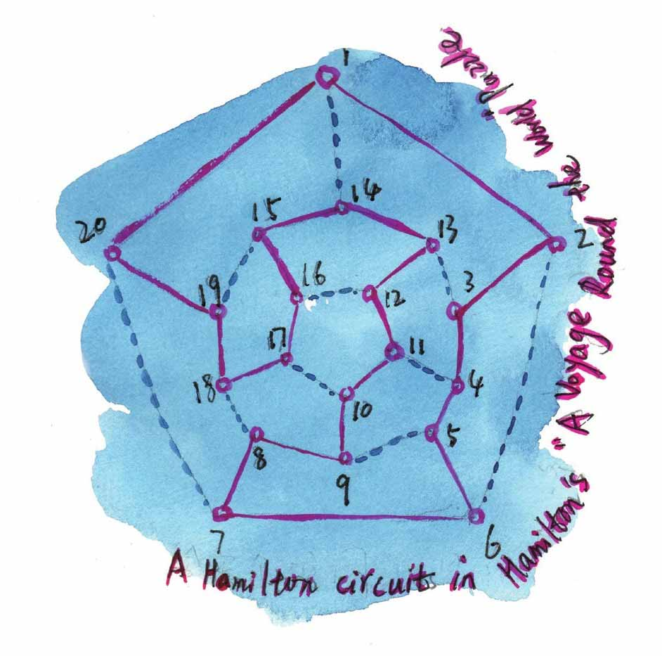
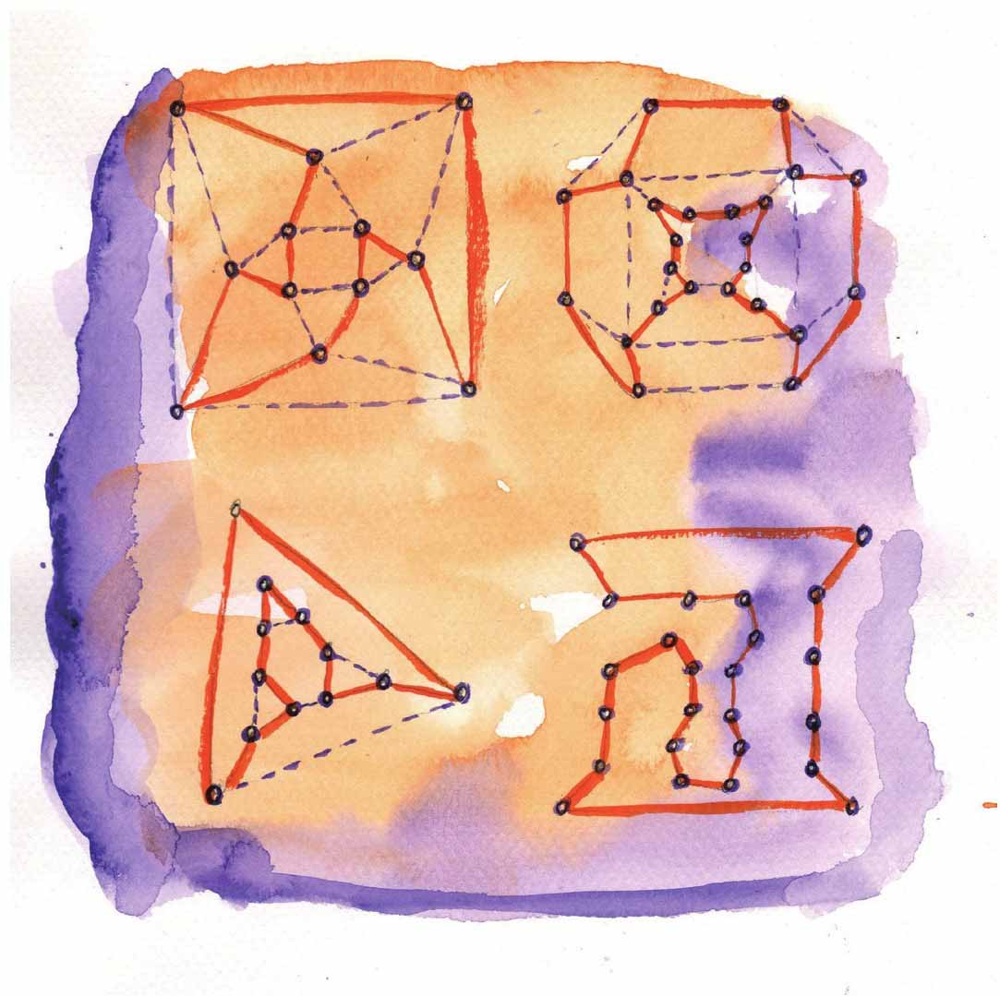

小文，在欧拉求解七桥问题的一个世纪之后，又诞生了一位天才级的数学家，他是爱尔兰人（据说他本人很看重这一点），名字叫威廉·罗恩·哈密顿（William Rowan Hamilton），他提出了图论中另一个有趣的问题——哈密顿回路问题。
哈密顿回路问题来源于哈密顿发明的一个游戏：一个规则的实心十二面体有20个顶点，在20个顶点上标出世界上著名的20个城市，要求游戏者找一条通过每个顶点刚好一次的并能回到起点的回路（这样的回路后来叫哈密顿回路）。也就是从一个城市出发，经过每个城市恰好一次，然后回到出发城市，即“绕行世界”一周。
下面的图是一个正十二面体展开后的平面图，按照图中的顶点编号所构成的回路，就是求哈密顿回路的一个解。
下面的图都存在哈密顿回路，存在哈密顿回路的图叫哈密顿图。


判断一个图是否存在哈密顿回路比判断是否存在欧拉回路困难，数学家们至今未找到判断哈密顿图的充分必要条件，这是一个未解难题。